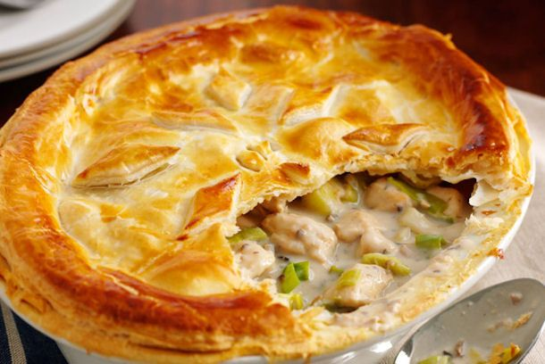

Odin Recipes: Chicken and Leek Pie

This chicken pie is unbeleekable - Well, it tastes much better than my
puns at least...
Ingredients:
- 2 tbsp vegetable oil
- 1 onion, finely chopped
- 2 medium leeks, washed, trimmed and thickly sliced
- 4 skinless chicken breasts, cut into bite-size pieces
- 1 garlic clove, crushed
- 150ml white wine
- 150ml chicken stock, hot
- 142ml carton double cream
- Sprigs fresh tarragon, leaves picked and roughly chopped
- 375g pack ready-rolled puff pastry
- 1 medium egg
Directions:
-
Heat the oil in a large frying pan over a medium heat. Add the onion and
leeks and cook for 4-5 minutes until softened.
-
Add the chicken pieces and cook, stirring, for another 4-5 minutes. Stir
in the garlic, add the wine and bubble away until reduced by two-thirds.
Pour in the stock and simmer until reduced by half. Add the cream and
tarragon, bring to the boil, then simmer for 5-6 minutes until
thickened. Season, then spoon into a 2.5-litre pie dish (or 4 x 300ml
ovenproof dishes). Set aside to cool.
-
Brush a little water along the edge of the pie dish or dishes. Unroll
the pastry and cut out a piece large enough to cover the dish or dishes.
Press down the edges and trim off the excess. Snip a small hole in the
centre of the pastry to let the steam escape. Put on a baking tray and
chill for 15 minutes.
- Meanwhile, preheat the oven to 220°C/fan200°C/gas 7.
-
Beat the egg with a little salt, then brush over the pastry. Bake for
40-45 minutes (20-25 minutes if you are making individual pies) until
the pastry is golden.
Return to homepage